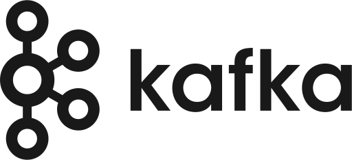

Local environment / OpenShift
CRC deployment
Where OSAC, Kafka, the adapter, and the PoC cost database run. This is a captured state, not a live cluster monitor. A green pod means its container is ready; it does not prove the end-to-end pipeline is delivering data.
Snapshot
01 Oct 2026 · after runtime smoke test
Node:
01 Oct 2026 · after runtime smoke test
Node:
crc · OpenShift 4.21.8CRC nodeReadyVM running; CRC reports OpenShift “Starting”
Cost consumer1 / 1Catalog-sync image 376bdfc
Catalog rows0OSAC currently lists zero catalog items
Instance types7Synced into PoC cost DB
Two paths into the PoC cost database
Runtime events and reference data enter the same consumer by different routes. Select a diagram node for its endpoint, version, and access notes.
Our componentsOSACInfrastructure
Runtime delivery verifiedCatalog reconciliation verified, source emptyMetering/rating pending
Explore the flow
Select a node to see its endpoint and how to reach it from your machine.
Emulator / requeststest workload · OSAC API
→
OSAC
→
osac · REST + gRPC
4.1.0kafka · KRaftCost adapter
→
osac · batch POSTConsumer + DB
cost-mgmtRuntime events reach raw_events Metering/cost lines not verified
Catalog source currently empty
OSAC catalog APIREST list endpoints
→Selective reconcilercatalog items + instance types · hourly
→PoC cost DBcatalog 0 · instance types 7
Workloads & versions
| Namespace | Component | Ready | Image / version |
|---|---|---|---|
| osac | OSAC REST | 1/1 | fulfillment-service:crcLocal tag; source commit not exposed · image ID 00cc6c84… |
| osac | OSAC gRPC | 1/1 | fulfillment-service:crcSame image ID as REST: 00cc6c84… |
| osac | OSAC OIDC | 1/1 | python:3.12-slim |
| osac | OSAC metering service | 1/1 | localhost/osac-metering-service:devLocal tag; source commit not exposed · digest 318b43ff… |
| osac | Cost-management adapter | 1/1 · delivering new events | localhost/cost-management-adapter:devLocal tag; source commit not exposed · digest 6dbc3b49…; new CRC consumer group |
| osac | Request generator | Completed | cost-event-consumer:catalog-sync-376bdfcOne-shot smoke pod; 11 creates + 12 deletes, 0 errors; not a running service |
| kafka | Kafka broker + controller | 1/1 each | Kafka 4.1.0Strimzi KRaft; Kafka custom resource Ready |
| cost-mgmt | Cost event consumer | 1/1 | cost-event-consumer:catalog-sync-376bdfcBuilt from this branch · digest 4ef613ad… |
| cost-mgmt | PoC cost DB | 1/1 | quay.io/sclorg/postgresql-18-c10s:latestFloating tag; exact build not asserted |
| postgres | OSAC database | Healthy | ghcr.io/cloudnative-pg/postgresql:18.3-system-trixie |
| cost-byoi | Koku API, listener, MASU + workers | Running | quay.io/martin_povolny/koku:768be82-arm64Optional BYOI stack; three worker deployments intentionally scaled to 0 |
| cost-byoi | Koku UI | 1/1 | koku-ui-onprem:crc-arm64Behind oauth2-proxy v7.6.0 |
| cost-byoi | Koku service operator | 0/1 | koku-service-operator:preprodOperator deployment not ready in this snapshot |
| cost-byoi-infra | Postgres · Valkey · MinIO | 1/1 each | postgres:16 · valkey:8 · minio:RELEASE.2025-01-20T14-49-07Z |
No workloads match this filter.
Source: read-only oc and crc checks on 01 Oct 2026. Local :dev, :crc, and :latest tags are not immutable source versions; image IDs are included where observed. Reloading this file does not refresh cluster state.